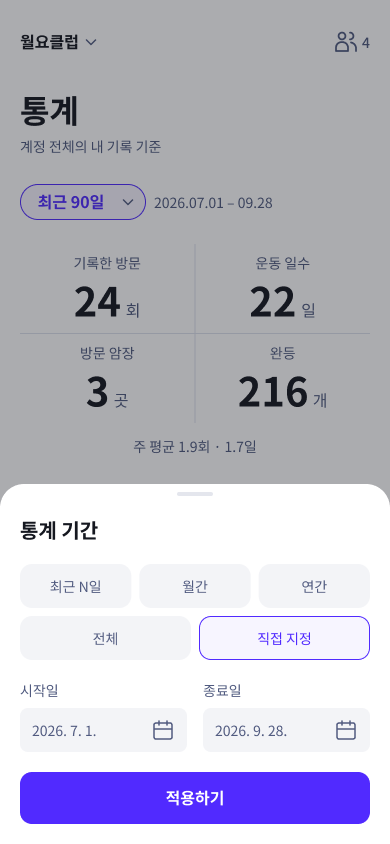
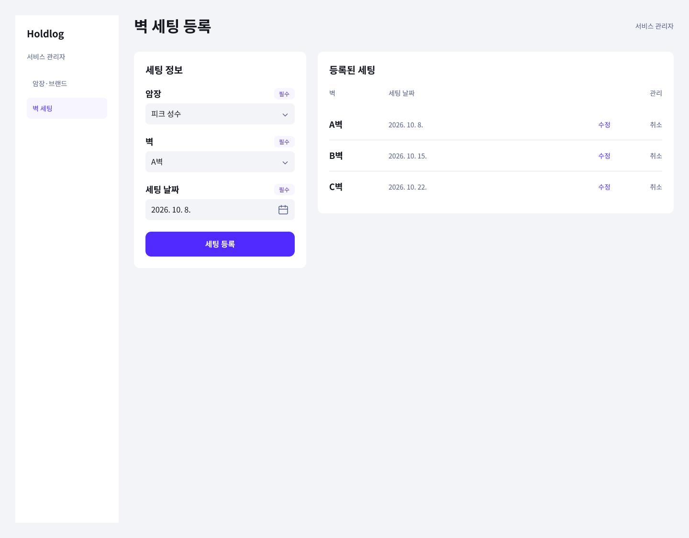
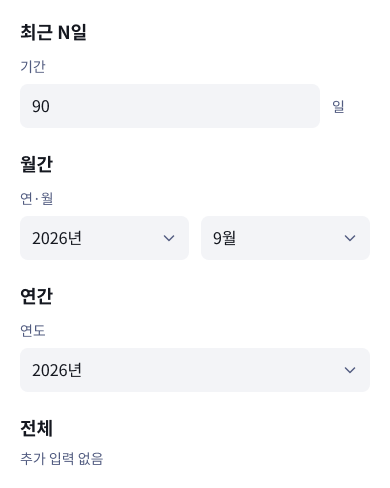
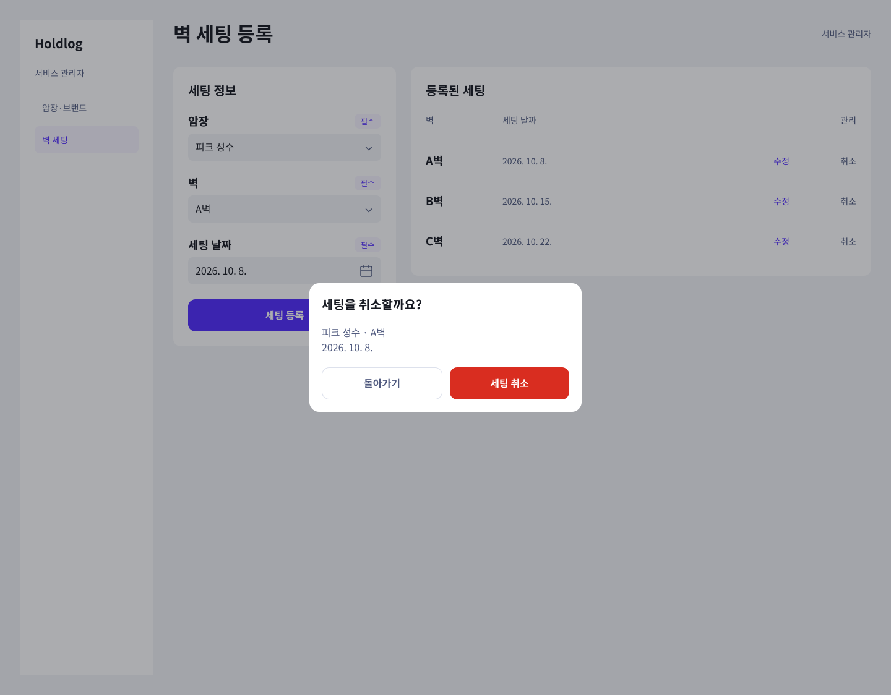

<!doctype html><html lang="ko"><meta charset="utf-8"><meta name="viewport" content="width=device-width,initial-scale=1"><title>Holdlog 기간 선택·관리자 웹</title><style>body{background:#f3f4f7;font-family:sans-serif;padding:24px}article{background:white;padding:24px;margin:0 0 24px}h2{font-size:18px}img{max-width:100%;height:auto}</style><article><h2>04.01.03 개인 통계 / 기간 선택</h2></article><article><h2>A02.01 암장·브랜드 등록 / 웹</h2></article><article><h2>A03.01 벽 세팅 등록 / 웹</h2></article><article><h2>통계 기간 — 선택별 입력 영역</h2></article><article><h2>A03.02 벽 세팅 등록 / 취소 확인</h2></article></html>
<article><h2>브랜드·암장 수정과 나가기 확인</h2><a href="../brand-gym-correction-2026-10-02/review.html">수정 부품과 대표 확인창 사진 보기</a></article>
